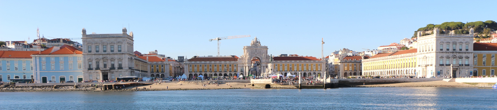

CMSB 2026 - July 24-25, Lisbon, Portugal
24th International Conference on Computational Methods in Systems Biology
24th International Conference on Computational Methods in Systems Biology

Keynote speakers

Dr. Anna Niarakis
Professor of Computational Systems Biology (... being updated ...) |